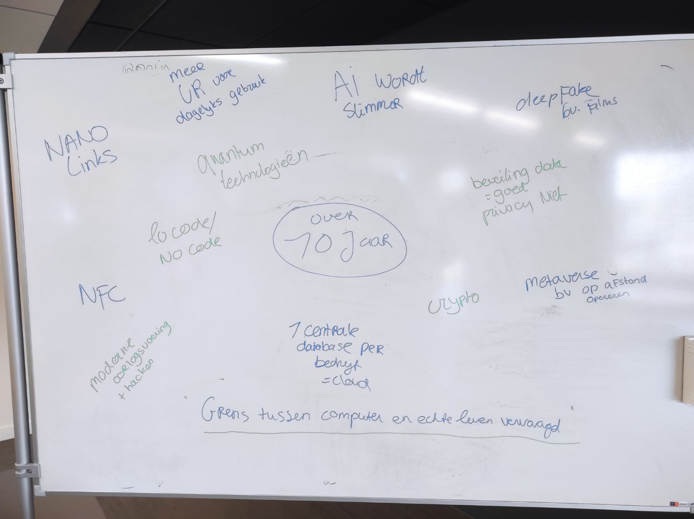
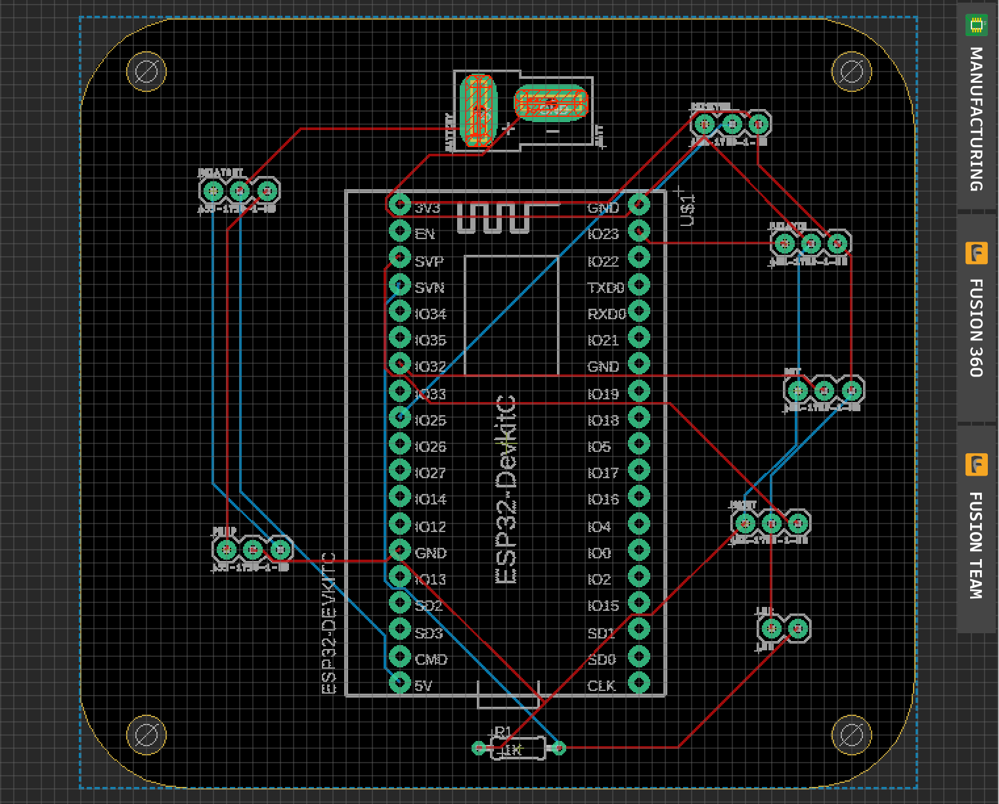
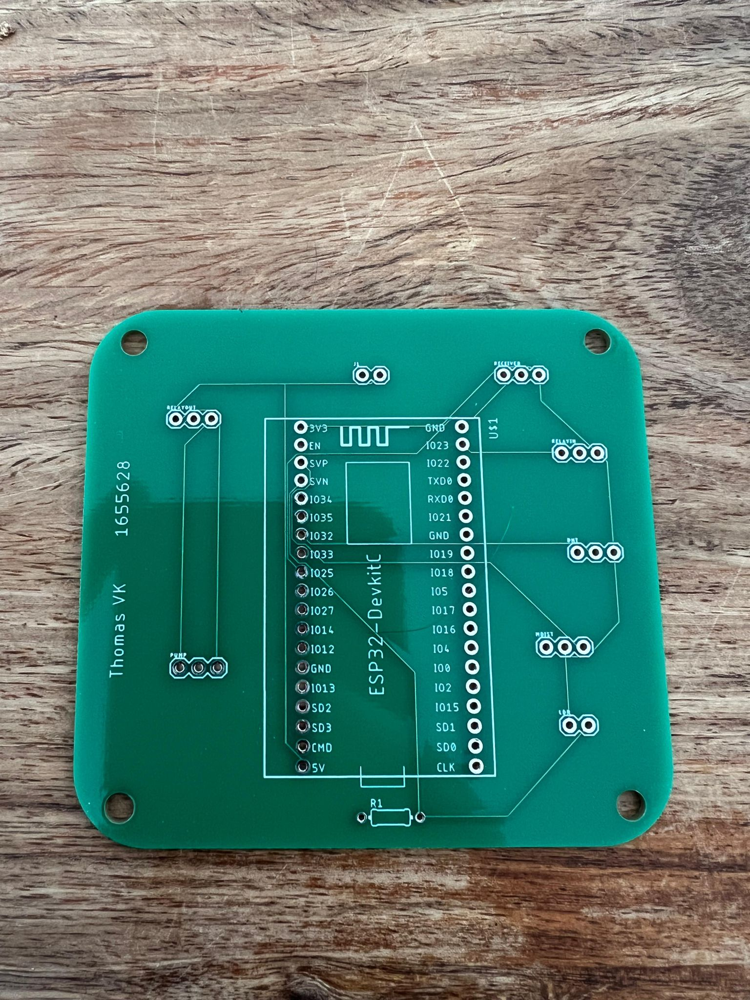
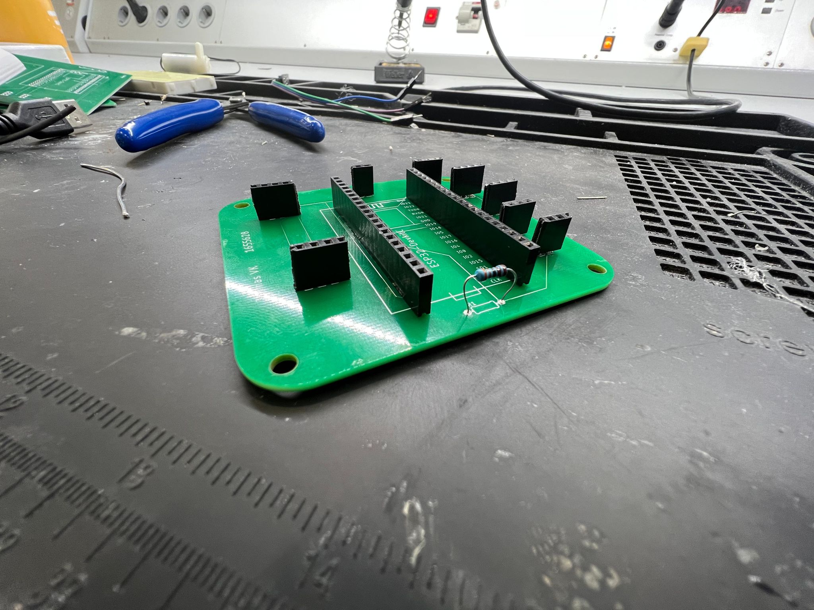
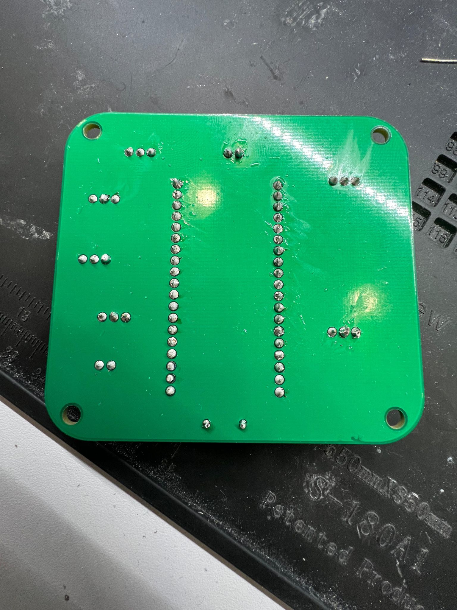
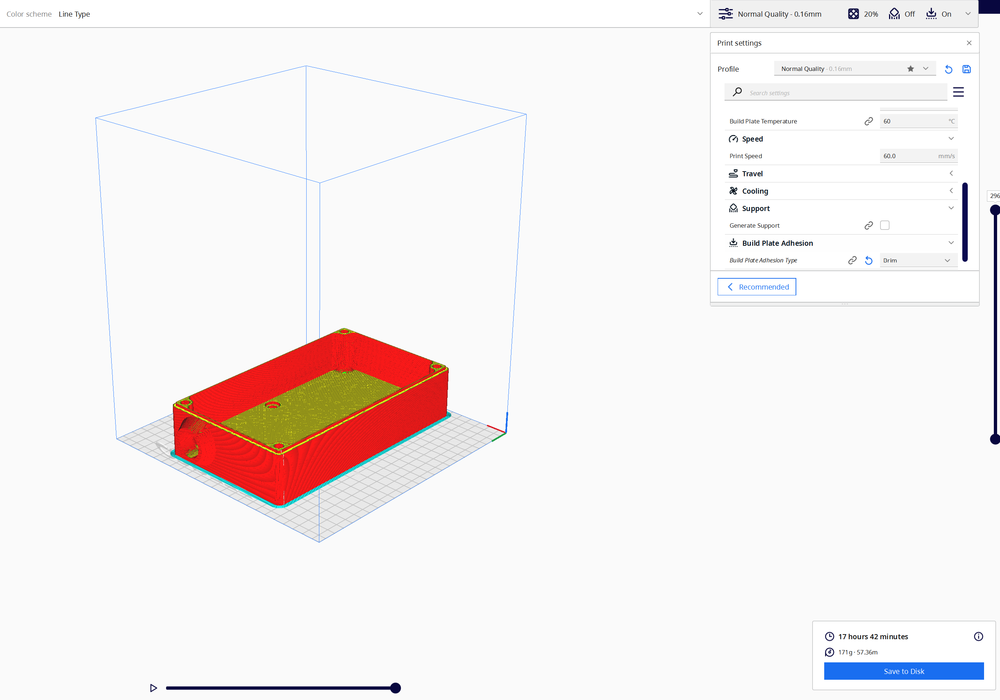
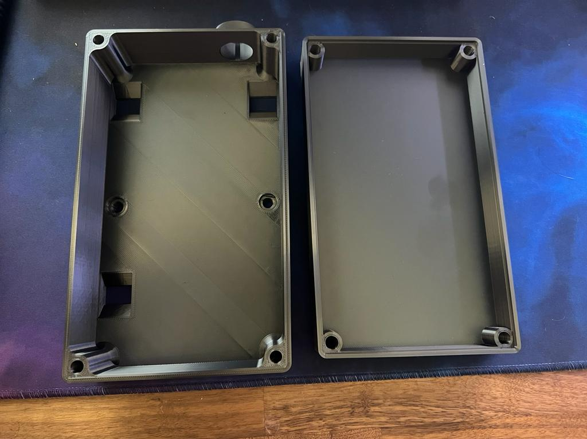

Welkom op de portfoliowebsite van Thomas van Kempen
Week 1 stond in het teken van de kennismaking met studenten, docenten en natuurlijk de minor zelf. Tijdens de kennismaking hebben we ook de ruimte gekregen om verschillende software te installeren. Verder hebben we voornamelijk gesproken over onze huidige opleidingen en waarom we voor de minor gekozen hebben.
De volgende activiteit stond in het teken van onze eigen smart journey. De start van de website waar je nu op terecht bent gekomen. In groepjes van vier hebben we nagedacht over wat smart industry nu eigenlijk voor staat en wat er eventueel veranderd in de aankomende jaren. Zelf vonden we het heel erg tof om een toekomstvoorspelling over 10 jaar te doen. Dit met de rede omdat technologie de laatste jaren heel erg exponentieel aan het groeien is. We wilden hier de mogelijke toekomstsituatie schetsen. Deze ideeën hebben we genoteerd op een whiteboard en gepresenteerd voor de klas.
In één van de eerste lessen van Witek hebben we voornamelijk gesproken over eerdere ervaringen met het opzetten van websites via html en css. Hier had ik zelf nog geen ervaring mee. Wel heb ik met mijn eigen opleiding regelmatig een website moeten designen. Echter gaat dit bij ons op de opleiding voornamelijk via applicaties zoals Adobe XD en Wordpress. Html en css was voor mij erg interessant, omdat dit één van de redenen was waarom ik deze minor heb gekozen; ik wilde graag leren programmeren omdat ik het gevoel heb dat deze skill mij heel erg kan helpen in de nabije toekomst. Ik hoef op deze manier namelijk niet af te hangen van de licenties die Adobe biedt. Gedurende de workshop heb ik de basics genoten van het programmeren en uiteindelijk ook een eerste opzet gemaakt van een website.
Het is in deze minor enorm belangrijk om de hulp van anderen te vragen bij vraagstukken die jijzelf niet helemaal begrijpt. Sinds ik studeer, is het voor mij al een hele taak om mijn eigen grens te trekken bij moeilijke vraagstukken. Je wilt iemand liever niet tot last zijn met jouw vraag en dus probeer je er zelf uit te komen. Gedurende deze week heb ik geprobeerd om voor mezelf duidelijk te maken wanneer ik iets echt niet begrijp en hier dus hulp bij nodig ga hebben. Een leerdoel zal hier uiteindelijk ook bij gevormd worden.
Week 3 stond in het teken van mijn eigen Smart Journey. De website waar je nu naar kijkt is een weerspiegeling van mijn eigen expeditie door het oerwoud wat de evolutie van technologie onthoud. Gedurende de verschillende workshops heb ik voornamelijk veel gehoord van de Hero’s Journey; een bekend model in de wereld van communicatie en multimedia design. Ik heb hier regelmatig mee moeten werken in mijn jaren op de HAN. Het mooie aan dit model is dat ik de Hero’s journey ook toe kan passen op mijn huidige levenssituatie. Ik wil mijn kennis over de ontwikkeling van technologie verbreden en dat doe ik middels verschillende workshops, zoals: HTML, CSS, Additive Manufacturing (3D printing). Maar ik voeg mijn eigen kennis over verschillende situaties ook aan met nieuwe informatie. Denk bijvoorbeeld aan het speedboat model, aangeleerd door Maarten van Gils. Dit model heeft betrekking op de manier hoe je een project doorloopt (als het bij deze gaat om een innovatie). Deze informatie was mij nog niet bekend, maar zal ik zeker gebruik van maken in de komende jaren.
Gedurende de minor hebben we verschillende kleine opdrachten uitgevoerd, met het doel om de studenten kennis te laten maken met de wereld van technologie. Eén van deze opdrachten was het creëren van een plantenmeetstation met behulp van een iot schakeling. Hierbij hebben we eerst informatie gekregen van enkele studenten van Universiteit Wageningen.
Voor het creëren van een plantenbesproeier, hebben we aan het begin van de Minor het "Blauwe bakje" mogen ontvangen. Hier zaten de belangrijkste componenten in die wij nodig zouden hebben met het in elkaar zetten van de iot schakeling. Voordat je componenten kan gaan solderen heb je eerst een pcb plaat nodig. Deze heb ik zelf ontwortpen in Eagle.
 De pcb heb ik vervolgens gesoldeerd om zo de componenten te laten rusten op de plaat.
 Ik heb veel geleerd tijdens de iot lessen en ben toch wel een beetje trots op de samenkomst van de componenten samen met de geprinte behuizing. Zoals eerder vermeld was deze opdracht compleet nieuw voor mij en had ik enkele weken nodig om alle informatie tot me te nemen. Tijdens de ontwerpfase van de pcb, heb ik heel veel gehad aan de feedback van Ashle. Zij heeft me vooral geholpen met het ontwerp in Eagle. Ook hebben we gezamenlijk de componenten op het pcb gesoldeerd. Kijkend naar de competenties, ben ik naar mijn eigen mening geslaagd voor deze opdracht. Uiteindelijk ging het een beetje van zelf. Zo heb ik regelmatig om feedback gevraagd aan docenten en medestudenten, maar heb ik ook verschillende dingen eerst uitgeprobeerd. Toen ik het eenmaal een beetje onder de knie begon te krijgen, heb ik samen met Baris de volledige pcb uitgewerkt. Ik heb hier en daar mijn eigen bevindingen met hem kunnen delen.
Tijdens de lessen van Herold hebben we de wereld van het 3D printen (additive manufacturing) kunnen ontdekken. Zo heb ik geleerd dat er veel meer soorten manieren van AM bestaan. Denk bijvoorbeeld aan poederprinten en het printen met metalen.
Voor de opdracht met de iot schakelaar, heb ik ook een bakje moeten ontwerpen. Dit heb ik gedaan in Solidworks (CAD). Ik heb de lessen over Solidworks als "zeer moeilijk" ervaren. Dit komt voornamelijk omdat ik CAD programma's nog steeds niet heel goed begrijp. Om mijn bakje toch te kunnen designen, heb ik de hulp ingeschakeld van verschillende studenten in de klas. Gezamenlijk heb ik met mijn medestudenten gekeken naar mijn design en op basis van feedback veranderingen toegepast. Herinner je mijn opgestelde leerdoel nog? Ik heb enorm veel gehad aan de samenwerking met andere studenten en ben er op deze manier achter gekomen dat ik toch vaker om hulp zou moeten vragen. Ik ben namelijk erg trots op het eindresultaat. Het bakje heb ik thuis bij mijzelf kunnen printen.
 Kijkend naar het eindresultaat van de behuizing, zijn er hier en daar nog zeker ruimtes voor verbetering. Zo is het verschil in printkwaliteit nogal zichtbaar tussen het bakje zelf en de deksel. Ik ga hier in de toekomst zeker meer aandacht in steken en zal de slides van de lessen van Herold erbij pakken.
Eén van de seminars van intervisie, kregen we de mogelijkheid om het DINAMO-model toe te passen op onze eigen casus. Dit model geeft ons inzicht in de veranderbereidheid van een bepaald bedrijf. We hebben dit model op een A3 formaat voor ons gekregen en de bedoeling was om stickers in de kleuren rood, oranje en groen te plakken op het vel. Met het onderzoek wat je tot dan toe had gedaan wisten we dus wat Van Losser (onze opdrachtgever) al gedaan had voor het starten van het innovatieproces, en belangrijker, of ze er al klaar voor waren. De kleur rood betekende "nog niet klaar voor innovatie", voor oranje: "ze hebben enkele aanpassingen nodig om het veranderproces succesvol aan te gaan" en groen: "dit bedrijf is er klaar voor om een verandertraject in te gaan".
Ik ben van mening dat deze opdracht mij heel erg heeft geholpen in het begrijpen van de casus. Ik heb namelijk meer ideeën kunnen opperen na afloop van deze seminar, omdat de uitleg en de presentatie die we gekregen hebben enorm bij de casus van het project pastte. Aan de hand van het seminar heb ik ook een stuk kunnen schrijven over verander- en implementatiemanagement in het rapport dat naar de opdrachtgever is verstuurd.